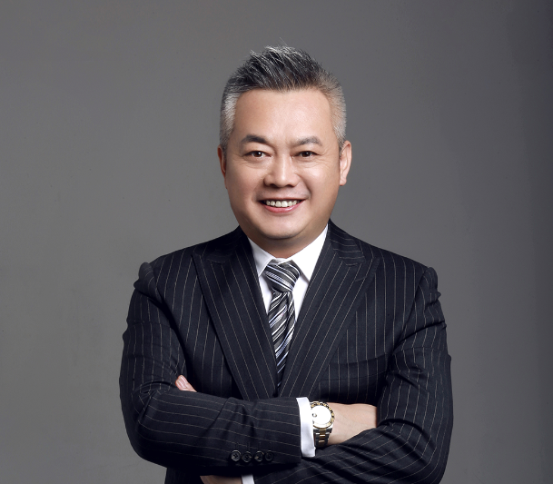

关于我们

About Us
ABOUT US
集团介绍
孝子部落集团为落实国家殡葬改革政策，弘扬传承中华优秀传统文化，提升殡葬行业服务品质，优化殡葬行业经营行为，历经19年经营总结沉淀，推出三维创新版块：产品创新、科技创新、教育创新；集团董事长吴帝伯先生于2019年提出新殡葬的概念即新零售、新服务、新科技、新文化、新供给
为各省市级协会、殡仪馆、墓园、殡葬服务商家、殡葬用品生产商批发商等殡葬服务单位，提供近30套完整有效的整体解决方案，致力于通过多维创新、平台赋能，搭建殡葬行业众创共享服务平台。
BUSINESS MODEL
商业模式
孝子部落是一家互联网公司，是互联网+大殡葬的产业生态服务商；
在殡葬的领域内，互联网必须要与线下结合，所以我们也是线下万家联盟模式；
线下店的服务水平需要提升，所以我们推出了帮扶赋能计划，帮助这些企业，提升客源，提升业绩，提升能力，简称提能增效；
具体指的是帮助线下公司把家属、来宾这个群体聚到线上，帮助公司建立私域流量池，跨行到各个行业，获得殡葬行业以外的高额利润。将千亿级体量的殡葬产业升级到万亿级体量的行列。
CEO
创始人介绍
吴帝伯，1974年出生于沈阳，中国著名企业家、培训导师、创业创新导师，中国殡葬行业商业模式创新先行者，中国特色互联网尽孝服务平台——孝子部落创始人，中国“殡葬+互联网”创新模式亲情讣告软件——讣语love创始人。沈阳孝子部落（集团）董事局主席、沈阳家族宝科技有限公司董事长、辽宁讣语科技有限公司董事长、沈阳孝子部落科技有限公司董事长、辽宁孝子部落殡葬礼仪服务公司董事长、沈阳家族宝风水文化工作室创始人、中国易学泰斗廖墨香先生弟子。
中国殡葬教育科技文化工作委员会副主任；中国殡葬行业认证专家委员会副主任；中国殡葬行业商业模式创新先行者；中国特色互联网尽孝服务平台——孝子部落创始人；中国“殡葬+互联网”创新模式赋予爱的亲人尽孝服务平台；中国特色殡葬行业商学院创始人；中国易经泰斗廖墨香老师亲传弟子；中国传统文化促进委员会副会长；北派易学研究学院副院长；易学数字预测专家；截止2018年，已从事殡葬行业18年，企业经营26年。

吴帝伯——殡葬行业商业模式第一人
孝子部落董事长
中国“殡葬+互联网”创新模式赋予爱的亲人尽孝服务平台创始人
中国首家殡葬行业商学院创始人
中国殡葬行业资深模式专家
中国首款家族宝风水盒创始人
他是个孝子
为了不让母亲担心，他就戒烟。父母在不远游，他就在当地做生意，他说：“这世上最珍贵也是最重要的就是我的父母。”谈起父母，他总是心怀感激。+互联网”创新模式赋予爱的亲人尽孝服务平台创始人
他是个孝子
中国首家殡葬行业商学院创始人
他是个孝子
中国殡葬行业资深模式专家
他是个孝子
中国首款家族宝风水盒创始人
他是殡葬行业创新引领者
他曾经拜访过20余家日本的殡葬企业，20余家台湾的殡葬企业，10余家欧美的殡葬企业，深感殡葬行业与日本差距50余年，与台湾差距20余年，深知殡葬行业与殡葬人的冷暖，从此发宏愿：誓让殡葬行业成为受社会尊重的行业，帮助10万家企业业绩倍增，让中国的殡葬行业找回尊严，2016年，打造中国特色互联网尽孝服务平台——孝子部落，并打造中国首家殡葬行业商学院。2018年，创造了中国“殡葬+互联网”创新模式第一款亲情讣告软件。
他开创了殡葬人根据地即孝子部落企业家商学院以教育为基础，推动行业升级，将传统的殡葬服务场所升级为孝道文化传播的体验基地。
他是殡葬行业创新引领者，传承中国优秀文化，孕育与时俱进的时代文化和时代精神，不断超越。
他是一名出色的商业导师
他18年磨一剑，结合百业经验，理念，将世界500强企业都在用的商业模式——四费模式，转化并应用于殡葬行业，五大重拳出击。